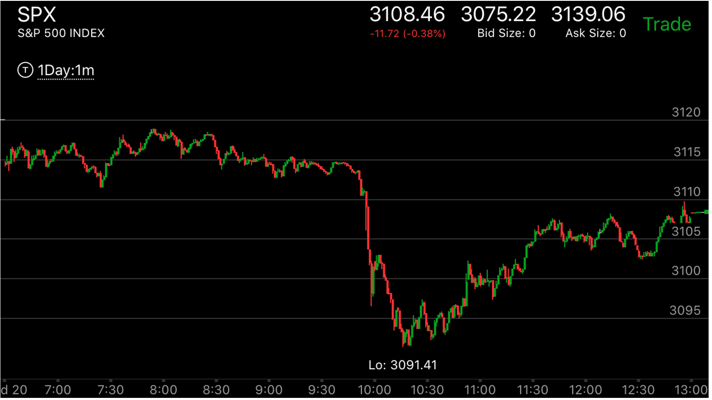

快速大跌或者上涨后的运动的时间因素
- 关键在于快速运动以前，震荡的时间，如果震荡时间远远超过前面的两段走势，那么这个走势会继续运动，直到出现一个反转为止，
如果震荡时间很短，或者刚刚超过前面的两段走势，那么这个走势会立刻反弹。
- 震荡时间要看最近的两段走势，而不是总的走势。总的走势可能很长时间，但是只要最近的两段走势时间很短，反转的时候
时间要和这个比，当然幅度也是一样。
图示：


图示:
图一：6：50的上涨，新高后，立刻拉回，然后再不断走高。形成了多段上涨。到了高点，它在高点走平。
特别是第二个高点8：00，走平几分钟，这样形成了相对强势。9：00它快速下跌。这时要看到，它的从8：00多反转后，震荡时间只有一个
小时，而上涨用了超过1个多小时。这样，这个走势不会持续运动，如果真的持续运动，就反转了。它立刻拉回，
在高处长时间震荡。这时才远远超过，这样才反转了。
图二：9:40出现新高后，立刻拉回，10：50再次新高，走平。这样就反转了。但是它立刻下跌，
时间太短了。这样的下跌无法持续。虽然它在底部出现了相对幅度走势，但是即使没有，它也不会继续下跌。但是出现相对幅度
的区别在于，它见到了底部，这样它一定会超过下跌前高点。而不是返回高点附近后，震荡。和图一的区别还在于，它下跌的时候，
超过了两段走势的范围。而图一没有超过就返回了。这样图一可以看作是下跌没有结束，返回后，继续下跌。而这个则是下跌结束了。
一定会超过高点。
图三：11：00的下跌，它的时间超过了9：30开始的两段上涨走势。因为前面的下跌两段走势是从3090开始的。但是它本身也走出了一个
两段下跌走势。所以反转了。这个比较难。但是可以通过时间来看，它如果一直在高位徘徊，没有走出超过3094的点，那么就是要继续跌。
但是从本身的幅度来看，8：30的两段走势是一个大的多的两段走势，相对9：30开始的两段走势。所以应该还处于上涨阶段。

图示：在开盘前，这个走势已经上涨了很久了。开盘后， 它在高点走平，然后7：10
走出一个相对下跌弱势，说明会继续上涨。结果它很快的越过了震荡高点，立刻拉回，再次创新高后，走平，这样就反转了。
它的最后的结束是一个从7:30开始的到8：00结束的贯通走势。而反转的震荡，从8：00开始，到10：00也没有越过
贯通走势的开始。这样它在9：50它快速大跌的时候，它没有立刻反弹，而是继续下跌，直到反转为止。


图示: 23：00大跌前，它不断的攀升，这个走势在开盘前出现了大跌，然后底部非常的缓慢创新低，
然后不断的走高。时间很长，用了两个小时。这个时间都是在积累，而不是刚刚反转就立刻大跌。所以这个走势大跌后不会反转。
一定要走出一个走势才可以。

图示: 这个走势在7：20没有到达底部，而是开始反弹反弹很久后走平，这样它的总的时间很长。